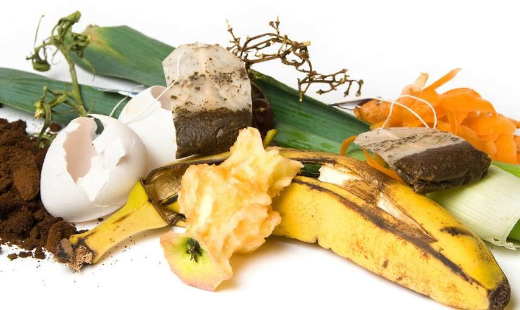
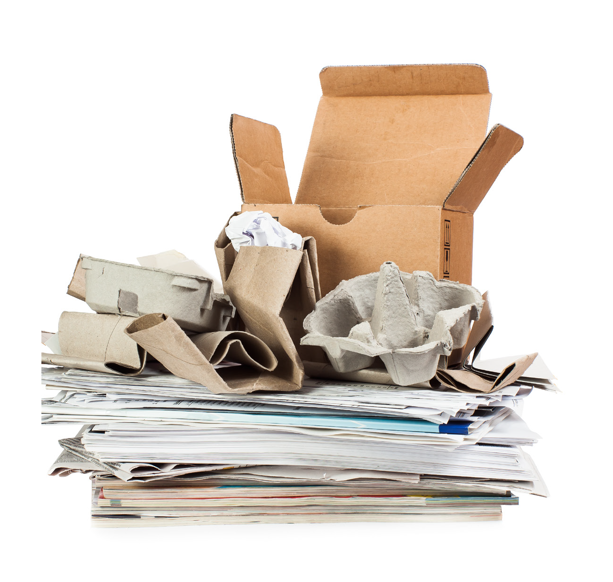
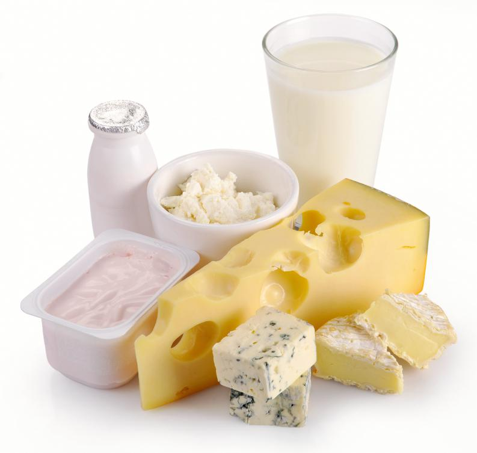
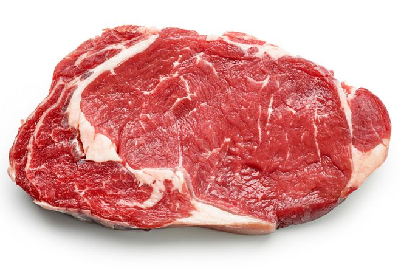
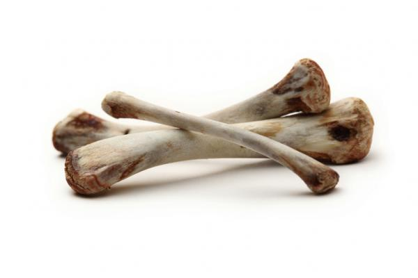

"Lo que es de la tierra...
que vuelva a ella."
Transformando restos orgánicos en fertilizante.

Economía circular en el barrio
Tus desechos son recursos
Tus desechos son recursos
Participa
¿Que SI recibimos?


Cartones y papeles
- Restos orgánicos de la cocina:
- restos de frutas y verduras y cáscaras de huevo
- Infusiones: borra de café, té y sus saquitos.
¿que NO recibimos?

Productos lácteos: leche, quesos y yogur

Productos cárnicos

Huesos
Encuentra tu sitio más cercano
Sobre el proyecto
AbonoKm0 es un servicio de gestión integral descentralizada de la fracción orgánica en puntos estratégicos de la ciudad para la recepción y tratamiento in situ mediado a través del empoderamiento ciudadano, premiando el compromiso mediante la contra entrega de un producto de valor fruto de este proceso. Es un programa descentralizado, de localía, participativo, educativo y biotecnológico.
En cooperación con


AbonoKm0® • All rights reserved